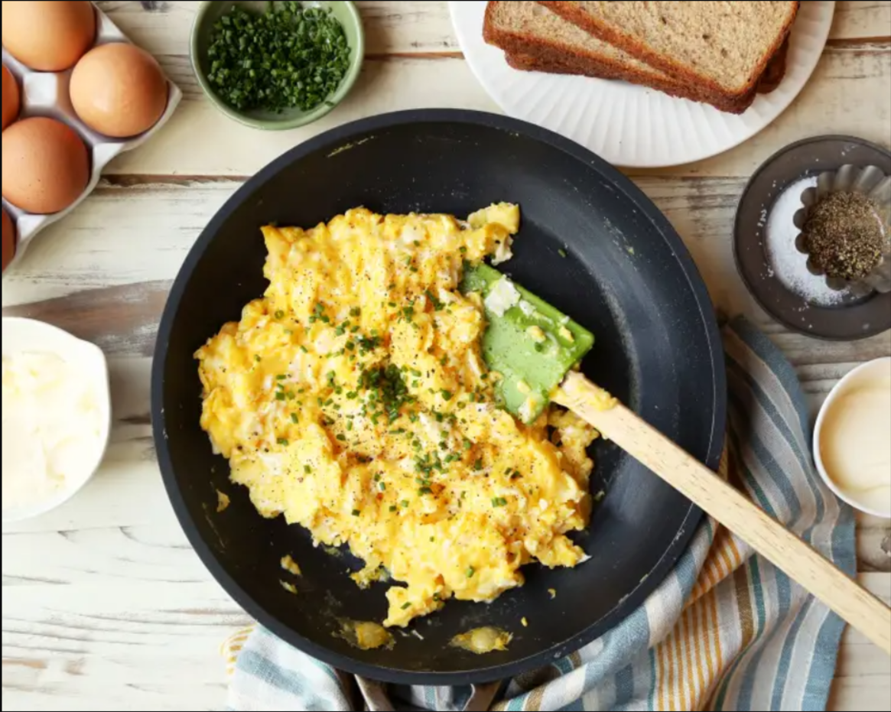

Gordon Ramsay's Scrambled Eggs

Description
World famous tough guy and chef Gordon Ramsay has a unique take on the
old classic scrambled eggs.
Ingredients
- 6 eggs
- 1 oz. butter, cold and cubed
- 1 tbsp. creme fraiche
- Fresh ground black pepper
- Chopped chives
Directions
- Break eggs into a pan and add the cubed butter.
- Stir over a medium heat until the eggs start to cook. Remove from
heat continue stirring eggs for about 20 second. Return to heat,
continue to stir eggs until they start to clump, remove from heat
and add the creme fraiche. Return to heat stirring in crème fraiche.
- Remove from heat when eggs are clumpy, but soft.
- Season with freshly ground black pepper and garnish with a
sprinkling of chopped chives.
Home |
Dollywood Fried Chicken |
Gordon Ramsay's Scrambled Eggs |
Soft & Chewy Oatmeal Raisin
Cookies